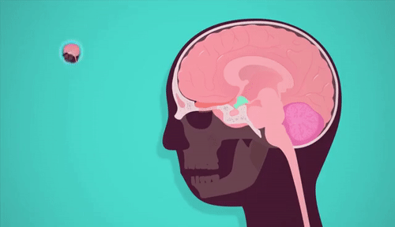

Defination
Endocrinology (from endocrine + -ology) is a branch of biology and medicine dealing with the endocrine system, its diseases, and its specific secretions known as hormones. It is also concerned with the integration of developmental events proliferation, growth, and differentiation, and the psychological or behavioral activities of metabolism, growth and development, tissue function, sleep, digestion, respiration, excretion, mood, stress, lactation, movement, reproduction, and sensory perception caused by hormones. Specializations include behavioral endocrinology [1][2][3] and comparative endocrinology.
The endocrine system consists of several glands, all in different parts of the body, that secrete hormones directly into the blood rather than into a duct system. Therefore, endocrine glands are regarded as ductless glands. Hormones have many different functions and modes of action; one hormone may have several effects on different target organs, and, conversely, one target organ may be affected by more than one hormone.
Diseases and medicine
Diseases
See main article at Endocrine diseases
Endocrinology also involves the study of the diseases of the endocrine system. These diseases may relate to too little or too much secretion of a hormone, too little or too much action of a hormone, or problems with receiving the hormone.
Societies and organisations
Because endocrinology encompasses so many conditions and diseases, there are many organizations that provide education to patients and the public. The Hormone Foundation is the public education affiliate of The Endocrine Society and provides information on all endocrine-related conditions. Other educational organizations that focus on one or more endocrine-related conditions include the American Diabetes Association, Human Growth Foundation, American Menopause Foundation, Inc., and Thyroid Foundation of America.
In North America the principal professional organizations of endocrinologists include The Endocrine Society, [7] the American Association of Clinical Endocrinologists,[8] the American Diabetes Association,[9] the Lawson Wilkins Pediatric Endocrine Society,[10] and the American Thyroid Association.[11]
In Europe, the European Society of Endocrinology (ESE) and the European Society for Paediatric Endocrinology (ESPE) are the main organisations representing professionals in the fields of adult and paediatric endocrinology, respectively.
In the United Kingdom, the Society for Endocrinology[12] and the British Society for Paediatric Endocrinology and Diabetes[13] are the main professional organisations.
The European Society for Paediatric Endocrinology[14] is the largest international professional association dedicated solely to paediatric endocrinology. There are numerous similar associations around the world.
Adult cardiology
Cardiology is a specialty of internal medicine. To be a cardiologist in the United States, a three-year residency in internal medicine is followed by a three-year fellowship in cardiology.
It is possible to specialize further in a sub-specialty.
Recognized sub-specialties in the United States by the ACGME are cardiac electrophysiology, echocardiography, interventional cardiology, and nuclear cardiology. Recognized subspecialties in the United States by the American Osteopathic Association Bureau of Osteopathic Specialists (AOABOS) include clinical cardiac electrophysiology and interventional cardiology.[1][2] While in India, a person needs to undergo three years of residency in General Medicine or Pediatrics after M.B.B.S and then three years of residency in Cardiology to be a D.M/Diplomate of National Board (DNB) in Cardiology.[citation needed]
Per Doximity, adult cardiologists make an average of $436,849 in the United States.[3]
Cardiac electrophysiology
Main article: Cardiac electrophysiology
Cardiac electrophysiology is the science of elucidating, diagnosing, and treating the electrical activities of the heart. The term is usually used to describe studies of such phenomena by invasive (intracardiac) catheter recording of spontaneous activity as well as of cardiac responses to programmed electrical stimulation (PES). These studies are performed to assess complex arrhythmias, elucidate symptoms, evaluate abnormal electrocardiograms, assess risk of developing arrhythmias in the future, and design treatment. These procedures increasingly include therapeutic methods (typically radiofrequency ablation, or cryoablation) in addition to diagnostic and prognostic procedures. Other therapeutic modalities employed in this field include antiarrhythmic drug therapy and implantation of pacemakers and automatic implantable cardioverter-defibrillators (AICD). [4][5]
Training
Endocrinologists are specialists of internal medicine or pediatrics. Reproductive endocrinologists deal primarily with problems of fertility and menstrual function—often training first in obstetrics. Most qualify as an internist, pediatrician, or gynecologist for a few years before specializing, depending on the local training system. In the U.S. and Canada, training for board certification in internal medicine, pediatrics, or gynecology after medical school is called residency. Further formal training to subspecialize in adult, pediatric, or reproductive endocrinology is called a fellowship. Typical training for a North American endocrinologist involves 4 years of college, 4 years of medical school, 3 years of residency, and 2 years of fellowship. In the US, adult endocrinologists are board certified by the American Board of Internal Medicine (ABIM) or the American Osteopathic Board of Internal Medicine (AOBIM) in Endocrinology, Diabetes and Metabolism.